目录
本文摘录整编了一些理论介绍，推导了word2vec中的数学原理；并考察了一些常见的word2vec实现，评测其准确率等性能，最后分析了word2vec原版C代码；针对没有好用的Java实现的现状，移植了原版C程序到Java。时间和水平有限，本文没有就其发展历史展开多谈，只记录了必要的知识点，并着重关注工程实践。
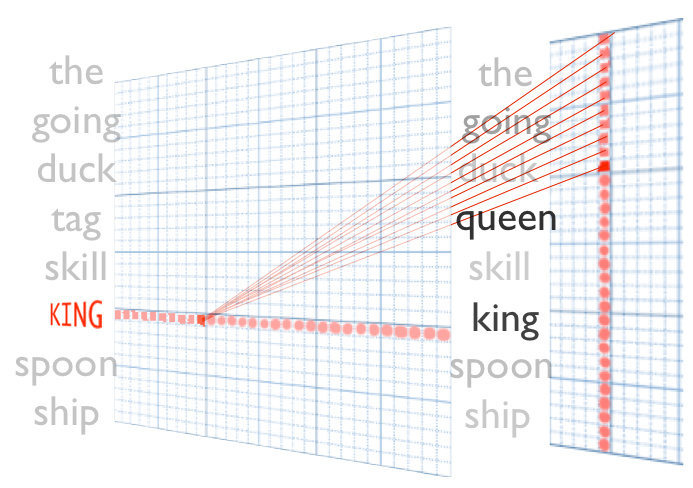
虽然我的Java方案速度比原版C程序高出1倍，在算法代码与原版C程序一致的情况下准确率仍然略低于原版C程序（不过依然是目前准确率最高的Java实现），并非完美，还有待改进。
本文的理论部分大量参考《word2vec中的数学原理详解》，按照我这种初学者方便理解的顺序重新编排、重新叙述。题图来自siegfang的博客。我提出的Java方案基于kojisekig，我们还在跟进准确率的问题。
背景
语言模型
在统计自然语言处理中，语言模型指的是计算一个句子的概率模型。
传统的语言模型中词的表示是原始的、面向字符串的。两个语义相似的词的字符串可能完全不同，比如“番茄”和“西红柿”。这给所有NLP任务都带来了挑战——字符串本身无法储存语义信息。该挑战突出表现在模型的平滑问题上：标注语料是有限的，而语言整体是无限的，传统模型无法借力未标注的海量语料，只能靠人工设计平滑算法，而这些算法往往效果甚微。
神经概率语言模型（Neural Probabilistic Language Model）中词的表示是向量形式、面向语义的。两个语义相似的词对应的向量也是相似的，具体反映在夹角或距离上。甚至一些语义相似的二元词组中的词语对应的向量做线性减法之后得到的向量依然是相似的。词的向量表示可以显著提高传统NLP任务的性能，例如《基于神经网络的高性能依存句法分析器》中介绍的词、词性、依存关系的向量化对正确率的提升等。
从向量的角度来看，字符串形式的词语其实是更高维、更稀疏的向量。若词汇表大小为N，每个字符串形式的词语字典序为i，则其被表示为一个N维向量，该向量的第i维为1，其他维都为0。汉语的词汇量大约在十万这个量级，十万维的向量对计算来讲绝对是个维度灾难。而word2vec得到的词的向量形式（下文简称“词向量”，更学术化的翻译是“词嵌入”）则可以自由控制维度，一般是100左右。
word2vec
word2vec作为神经概率语言模型的输入，其本身其实是神经概率模型的副产品，是为了通过神经网络学习某个语言模型而产生的中间结果。具体来说，“某个语言模型”指的是“CBOW”和“Skip-gram”。具体学习过程会用到两个降低复杂度的近似方法——Hierarchical Softmax或Negative Sampling。两个模型乘以两种方法，一共有四种实现。这些内容就是本文理论部分要详细阐明的全部了。
Hierarchical Softmax
模型共同点
无论是哪种模型，其基本网络结构都是在下图的基础上，省略掉hidden layer：

为什么要去掉这一层呢？据说是因为word2vec的作者嫌从hidden layer到output layer的矩阵运算太多了。于是两种模型的网络结构是：

其中w(t)代表当前词语位于句子的位置t，同理定义其他记号。在窗口内（上图为窗口大小为5），除了当前词语之外的其他词语共同构成上下文。
CBOW
原理
CBOW 是 Continuous Bag-of-Words Model 的缩写，是一种根据上下文的词语预测当前词语的出现概率的模型。其图示如上图左。
CBOW是已知上下文，估算当前词语的语言模型。其学习目标是最大化对数似然函数：
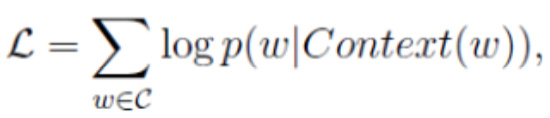
其中，w表示语料库C中任意一个词。从上图可以看出，对于CBOW，
输入层是上下文的词语的词向量（什么！我们不是在训练词向量吗？不不不，我们是在训练CBOW模型，词向量只是个副产品，确切来说，是CBOW模型的一个参数。训练开始的时候，词向量是个随机值，随着训练的进行不断被更新）。
投影层对其求和，所谓求和，就是简单的向量加法。
输出层输出最可能的w。由于语料库中词汇量是固定的|C|个，所以上述过程其实可以看做一个多分类问题。给定特征，从|C|个分类中挑一个。
对于神经网络模型多分类，最朴素的做法是softmax回归：
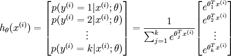
softmax回归需要对语料库中每个词语（类）都计算一遍输出概率并进行归一化，在几十万词汇量的语料上无疑是令人头疼的。
不用softmax怎么样？比如SVM中的多分类，我们都知道其多分类是由二分类组合而来的：
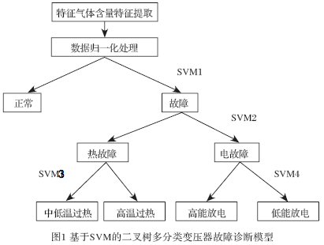
这是一种二叉树结构，应用到word2vec中被作者称为Hierarchical Softmax：

上图输出层的树形结构即为Hierarchical Softmax。
非叶子节点相当于一个神经元（感知机，我认为逻辑斯谛回归就是感知机的输出代入f(x)=1/(1+e^x)），二分类决策输出1或0，分别代表向下左转或向下右转；每个叶子节点代表语料库中的一个词语，于是每个词语都可以被01唯一地编码，并且其编码序列对应一个事件序列，于是我们可以计算条件概率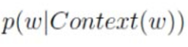。
在开始计算之前，还是得引入一些符号：
-
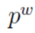从根结点出发到达w对应叶子结点的路径.
-
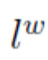路径中包含结点的个数
-
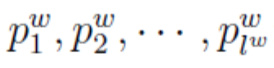路径中的各个节点
-
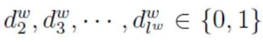词w的编码，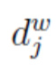表示路径第j个节点对应的编码（根节点无编码）
-
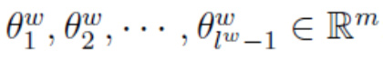路径中非叶节点对应的参数向量
于是可以给出w的条件概率：
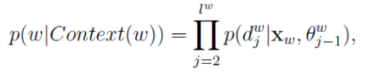
这是个简单明了的式子，从根节点到叶节点经过了-1个节点，编码从下标2开始（根节点无编码），对应的参数向量下标从1开始（根节点为1）。
其中，每一项是一个逻辑斯谛回归：
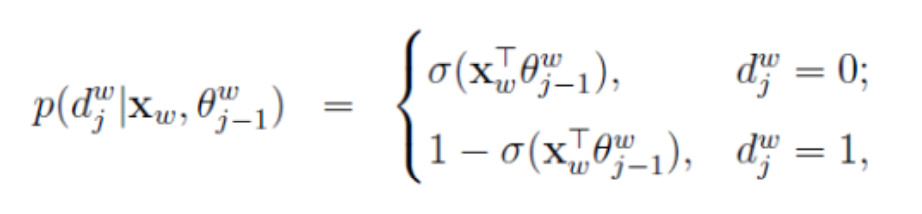
考虑到d只有0和1两种取值，我们可以用指数形式方便地将其写到一起：
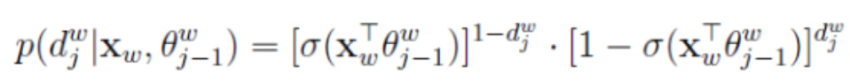
我们的目标函数取对数似然：
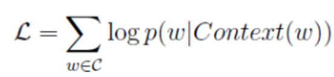
将代入上式，有
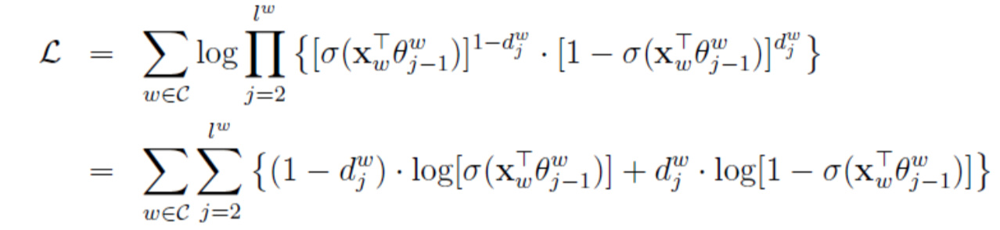
这也很直白，连乘的对数换成求和。不过还是有点长，我们把每一项简记为：
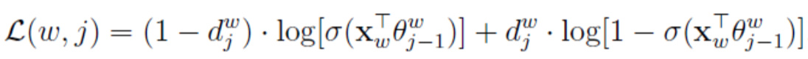
怎么最大化对数似然函数呢？分别最大化每一项即可（这应该是一种近似，最大化某一项不一定使整体增大，具体收敛的证明还不清楚）。怎么最大化每一项呢？先求函数对每个变量的偏导数，对每一个样本，代入偏导数表达式得到函数在该维度的增长梯度，然后让对应参数加上这个梯度，函数在这个维度上就增长了。这种白话描述的算法在学术上叫随机梯度上升法，详见更规范的描述。
每一项有两个参数，一个是每个节点的参数向量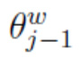，另一个是输出层的输入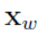，我们分别对其求偏导数：
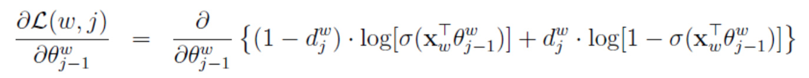
因为sigmoid函数的导数有个很棒的形式：
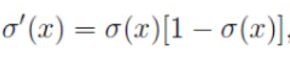
于是代入上上式得到：
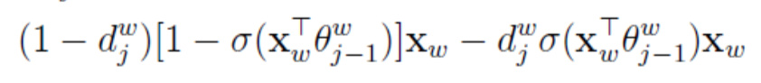
合并同类项得到：
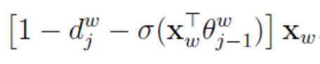
于是的更新表达式就得到了：

其中，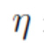是机器学习的老相好——学习率，通常取0-1之间的一个值。学习率越大训练速度越快，但目标函数容易在局部区域来回抖动。
再来的偏导数，注意到中和是对称的，所有直接将的偏导数中的替换为，得到关于的偏导数：
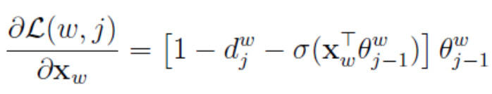
于是的更新表达式也得到了。
不过是上下文的词向量的和，不是上下文单个词的词向量。怎么把这个更新量应用到单个词的词向量上去呢？word2vec采取的是直接将的更新量整个应用到每个单词的词向量上去：
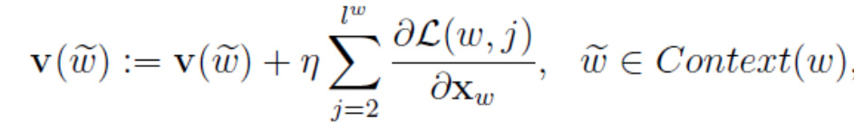
其中，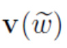代表上下文中某一个单词的词向量。我认为应该也可以将其平均后更新到每个词向量上去，无非是学习率的不同，欢迎指正。
代码分析
于是就可以得到两个参数更新的伪码：
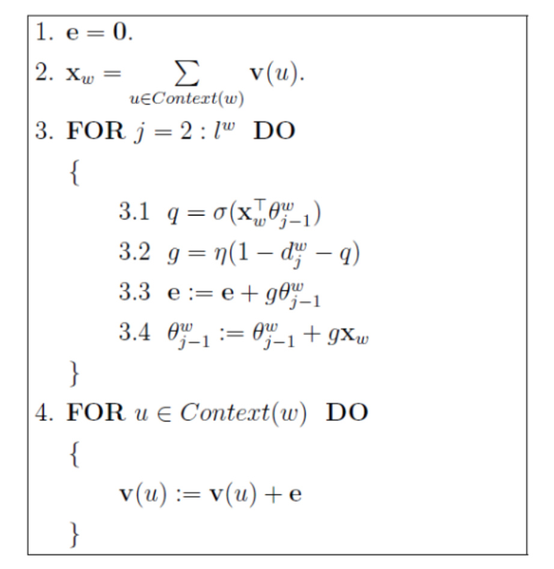
在原版C代码中的对应关系是：
- f = 0;
- // Propagate hidden -> output
- for (c = 0; c < layer1_size; c++)
- f += neu1[c] * syn1[c + l2];
f对应q，neu1对应，syn1对应。
- // 'g' is the gradient multiplied by the learning rate
- g = (1 - vocab[word].code[d] - f) * alpha;
对应伪码中的g。
- // Propagate errors output -> hidden
- for (c = 0; c < layer1_size; c++)
- neu1e[c] += g * syn1[c + l2];
对应伪码中的e。
- // Learn weights hidden -> output
- for (c = 0; c < layer1_size; c++)
- syn1[c + l2] += g * neu1[c];
对应伪码中的。
Skip-gram
原理
Skip-gram只是逆转了CBOW的因果关系而已，即已知当前词语，预测上下文。
其网络结构如下图所示：

上图与CBOW的两个不同在于
-
输入层不再是多个词向量，而是一个词向量
-
投影层其实什么事情都没干，直接将输入层的词向量传递给输出层
在对其推导之前需要引入一个新的记号：
u：表示w的上下文中的一个词语。
于是语言模型的概率函数可以写作：
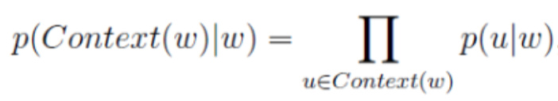
注意这是一个词袋模型，所以每个u是无序的，或者说，互相独立的。
在Hierarchical Softmax思想下，每个u都可以编码为一条01路径：
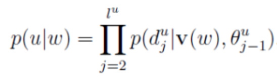
类似地，每一项都是如下简写：
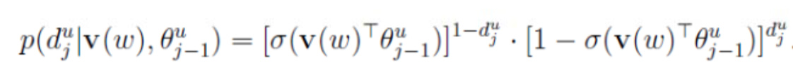
把它们写到一起，得到目标函数：
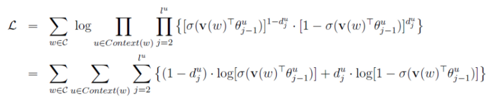
类似CBOW的做法，将每一项简记为：
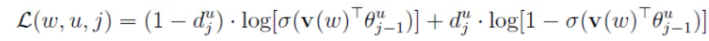
虽然上式对比CBOW多了一个u，但给定训练实例（一个词w和它的上下文{u}），u也是固定的。所以上式其实依然只有两个变量和，对其求偏导数：
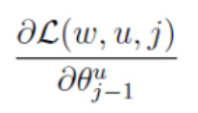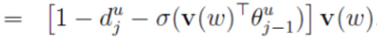
具体求导过程类似CBOW，略过。
于是得到的更新表达式：
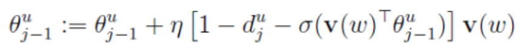
同理利用对称性得到对的偏导数：

于是得到的更新表达式：
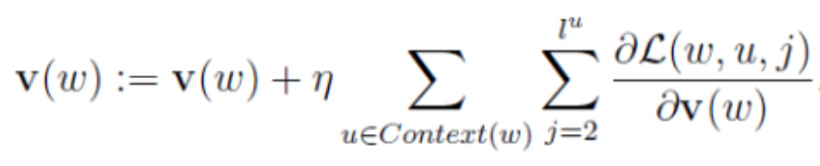
训练伪码如下：

word2vec源码中并没有等更新完再更新，而是即时地更新：
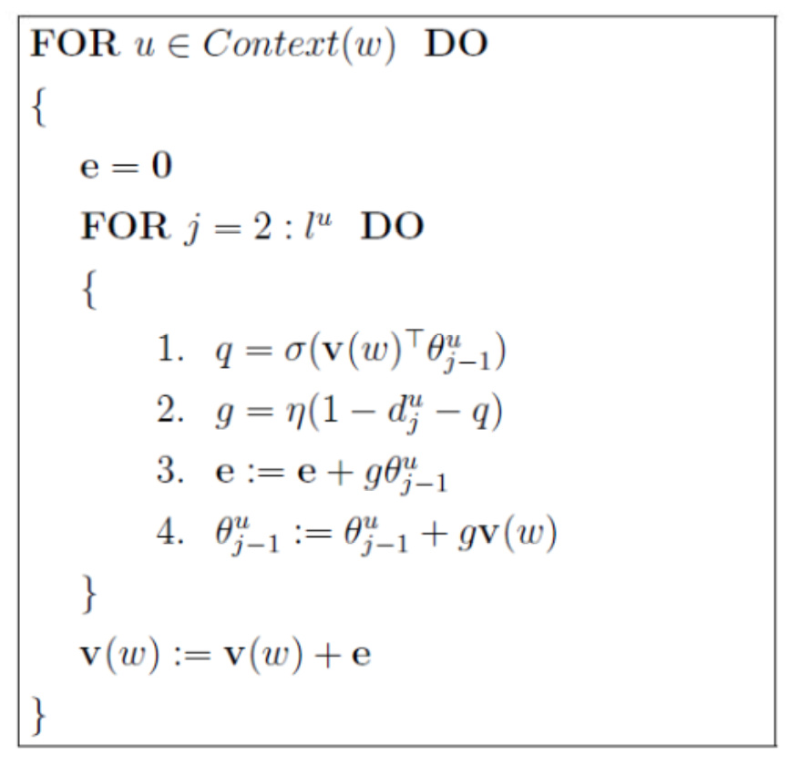
具体对应源码中的
- // Propagate hidden -> output
- for (c = 0; c < layer1_size; c++)
- f += syn0[c + l1] * syn1[c + l2];
- // 'g' is the gradient multiplied by the learning rate
- g = (1 - vocab[word].code[d] - f) * alpha;
- // Propagate errors output -> hidden
- for (c = 0; c < layer1_size; c++)
- neu1e[c] += g * syn1[c + l2];
- // Learn weights hidden -> output
- for (c = 0; c < layer1_size; c++)
- syn1[c + l2] += g * syn0[c + l1];
f对应q，syn0对应v，syn1对应，neu1e对应e。
Negative Sampling
通过上一章的学习，我们知道无论是CBOW还是Skip-gram模型，其实都是分类模型。对于机器学习中的分类任务，在训练的时候不但要给正例，还要给负例。对于Hierarchical Softmax，负例放在二叉树的根节点上。对于Negative Sampling，负例是随机挑选出来的。据说Negative Sampling能提高速度、改进模型质量。
CBOW
给定训练样本，即一个词w和它的上下文Context(w)，Context(w)是输入，w是输出。那么w就是正例，词汇表中其他的词语的就是负例。假设我们通过某种采样方法获得了负例子集NEG(w)。对于正负样本，分别定义一个标签：
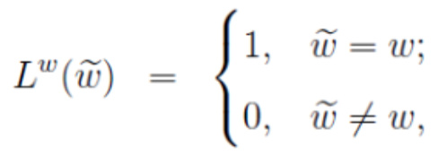
也即正样本为1，负样本为0。
对于给定正样本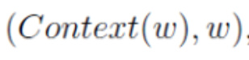，我们希望最大化：
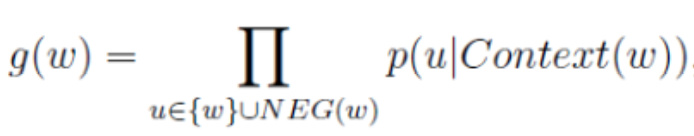
其中，

也就是说，当u是正例时，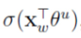越大越好，当u是负例时， 越小越好。因为等于模型预测样本为正例的概率，当答案就是正的时候，我们希望这个概率越大越好，当答案是负的时候，我们希望它越小越好，这样才能说明该模型是个明辨是非的好同志。
越小越好。因为等于模型预测样本为正例的概率，当答案就是正的时候，我们希望这个概率越大越好，当答案是负的时候，我们希望它越小越好，这样才能说明该模型是个明辨是非的好同志。
每个词都是如此，语料库有多个词，我们将g累积得到优化目标。因为对数方便计算，我们对其取对数得到目标函数：
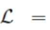

记双重求和中的每一项为：
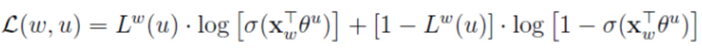
求梯度：
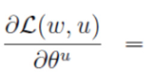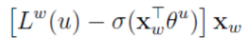
于是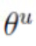的更新方法为：
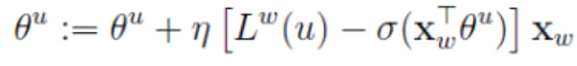
利用对称性得到关于的梯度：
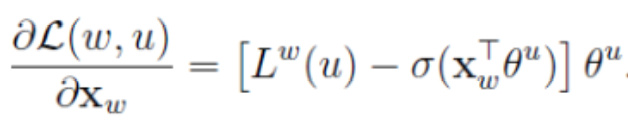
将该更新应用到每个词向量上去：
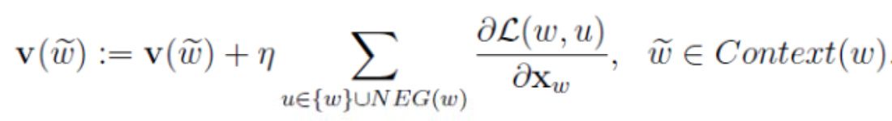
训练伪码为：

对应原版C代码的片段：
- f = 0;
- for (c = 0; c < layer1_size; c++)
- f += neu1[c] * syn1neg[c + l2];
- if (f > MAX_EXP)
- g = (label - 1) * alpha;
- else if (f < -MAX_EXP)
- g = (label - 0) * alpha;
- else
- g = (label - expTable[(int) ((f + MAX_EXP) * (EXP_TABLE_SIZE / MAX_EXP / 2))]) * alpha;
- for (c = 0; c < layer1_size; c++)
- neu1e[c] += g * syn1neg[c + l2];
- for (c = 0; c < layer1_size; c++)
- syn1neg[c + l2] += g * neu1[c];
Skip-gram
有了前三次的经验，这次轻车熟路地给出结论吧。颠倒样本的x和y部分，也即对，我们希望最大化：
其中，

最终目标函数为：

其中，

分别求出梯度：

得到两者的更新方法：
+=

训练伪码为：

对应原版C代码片段：
- f = 0;
- for (c = 0; c < layer1_size; c++)
- f += syn0[c + l1] * syn1neg[c + l2];
- if (f > MAX_EXP)
- g = (label - 1) * alpha;
- else if (f < -MAX_EXP)
- g = (label - 0) * alpha;
- else
- g = (label - expTable[(int) ((f + MAX_EXP) * (EXP_TABLE_SIZE / MAX_EXP / 2))]) * alpha;
- for (c = 0; c < layer1_size; c++)
- neu1e[c] += g * syn1neg[c + l2];
- for (c = 0; c < layer1_size; c++)
- syn1neg[c + l2] += g * syn0[c + l1];
syn0对应，syn1neg对应，f运算后得到q，代码中有优化（后文分解），neu1e对应e。
更多细节
Huffman树
上文一直在用二叉树描述Hierarchical Softmax，这是因为我不想仿照大部分tutorial那样一下子拿出Huffman这么具体的细节。初期对word2vec的大框架还没把握住的时候突然看到这些细节的话，人会抓不住重点，造成学习成本无谓的上升。我当时看到有些tutorial第一节就在讲Huffman编码，还以为实现word2vec一定要用Huffman树呢。
其实根本不是的，任何二叉树都可以。Huffman树只是二叉树中具体的一种，特别适合word2vec的训练。
word2vec训练的时候按照词频将每个词语Huffman编码，由于Huffman编码中词频越高的词语对应的编码越短。所以越高频的词语在Hierarchical Softmax过程中经过的二分类节点就越少，整体计算量就更少了。
负采样算法
任何采样算法都应该保证频次越高的样本越容易被采样出来。基本的思路是对于长度为1的线段，根据词语的词频将其公平地分配给每个词语：

counter就是w的词频。
于是我们将该线段公平地分配了：

接下来我们只要生成一个0-1之间的随机数，看看落到哪个区间，就能采样到该区间对应的单词了，很公平。
但怎么根据小数找区间呢？速度慢可不行。
word2vec用的是一种查表的方式，将上述线段标上M个“刻度”，刻度之间的间隔是相等的，即1/M：

接着我们就不生成0-1之间的随机数了，我们生成0-M之间的整数，去这个刻度尺上一查就能抽中一个单词了。
在word2vec中，该“刻度尺”对应着table数组。具体实现时，对词频取了0.75次幂：
这个幂实际上是一种“平滑”策略，能够让低频词多一些出场机会，高频词贡献一些出场机会，劫富济贫。
sigmoid函数
类似的查表方法还有sigmoid函数的计算，因为该函数使用太频繁，而其值仅仅在靠近0的时候才会剧烈变化，远离0的方向很快趋近0和1。所以源码中也采用了“刻度查表”的方法，先算出了很多个刻度对应的函数值，运算中直接查表。这部分对应:
- expTable = (real *) malloc((EXP_TABLE_SIZE + 1) * sizeof(real));
- for (i = 0; i < EXP_TABLE_SIZE; i++)
- {
- expTable[i] = exp((i / (real) EXP_TABLE_SIZE * 2 - 1) * MAX_EXP); // Precompute the exp() table
- expTable[i] = expTable[i] / (expTable[i] + 1); // Precompute f(x) = x / (x + 1)
- }
多线程
关于如何多线程并行训练的问题，我没看代码之前也想过。大致就是将语料按照线程数均分，大家分头算，更新参数的过程中做好线程同步的工作。
后来看了原版C代码，原来作者压根就没做线程同步，一个全局的数组，大家都往里面写，万一下标冲突了怎么办？那就让它冲突呗……数组那么大（在text8语料上是一千万），线程那么少，冲突的概率不大吧。
一些开源实现
C
https://github.com/dav/word2vec
在原版的基础上打了一些社区的patch，可以在macos上make编译
https://github.com/bpiwowar/word2vec
原版的CMake迁移，可以在macos下编译
https://github.com/RaRe-Technologies/gensim/blob/develop/gensim/models/word2vec.py
大名鼎鼎的gensim，适合Python用户。
https://github.com/h10r/word2vec-macosx-maverics
改了几个文件头，可以在macos上make编译。
C++
https://github.com/eske/multivec
C++实现的各种各样的XXvector，包括paragraph vector等，其word2vec只是对原版C代码的包装，没有多少改进。
*https://github.com/jdeng/word2vec
又一份C++11的实现，虽然星星很多，但据说准确率惨不忍睹，并且作者没有解释。在较早的一份issue（就是由一份Java版的作者siegfang提出的）中，作者表示“I am not sure if my implementation is accurate”。另外Google论坛上有人表示该C++11实现只有原版C实现速度的一半。所以我认为这两个版本都应该谨慎使用。
Java
一份Java实现，使用了很多Google的库，校正了一些原版的错误，阉割掉了k-means，从代码质量上讲总体是一份不错的实现。其输出的bin模型与原版C程序直接兼容，然而并不支持宽字符（需要改改，有个pull request做了，但作者一直没merge）。我测试了其准确率，比原版低20%左右。从这一点来讲，该实现没有多大价值。
https://github.com/kojisekig/word2vec-lucene
一份Java实现，是我见过最忠于原版的Java实现。卖点是不但可以用文本文件训练，还可以直接用Lucene的index训练。对于文本，由于Java没有“读取下一个String”的IO接口，作者实现了一个TextFileCorpus.nextWord。该方法读取一行并且拆分成字符串数组，然而text8整个文件也就一行，所以会频繁地多次读取（多个线程），然后OOM。作者提供一个切割程序，将text8切成多行，这样才能训练text8。作者并没有做准确率评测，我移植了谷歌的评测程序，并提交给了作者。我还将评测结果做了对比，比原版低10%左右，也报告给了作者，有志于开源项目的朋友可以持续参与讨论。事实上，这份实现的价值是最高的，因为它的准确率是Java中最高的。
*https://github.com/siegfang/word2vec
一份Java实现，卖点是并行化（其实上所有开源的都支持并行化）；内存占用较大（Java的通病），据作者siegfang讲参考了上述C++11实现。然而上梁不正，下梁能好到哪去。既不支持negative sampling，又不能保证准确率，毫无亮点。
其他不在此列表中的方案要么没被我看到，要么不值得一试。
事实上，上述实现都没入这位日本友人的评测单，他建议或者原版，或者gensim。
我的Java方案
在C和Python界，我们分别有原版C程序和gensim可以用；在Java界，没有足够好用的开源实现。鉴于此，我决定在kojisekig的基础上优化一下，目前效果如下——
参数
使用相同的参数
- word2vec -train text8 -output vectors.bin -cbow 1 -size 200 -window 8 -negative 25 -hs 0 -sample 1e-4 -threads 8 -binary 1 -iter 15
- com.hankcs.word2vec.Train -input text8 -output vectors.txt -cbow 1 -size 200 -window 8 -negative 25 -hs 0 -sample 1e-4 -threads 8 -binary 1 -iter 15
训练速度
训练过程中的对比——
原版C代码
- Alpha: 0.048220 Progress: 3.56% Words/thread/sec: 78.33k
我的Java移植
- Alpha: 0.048824 Progress: 2.39% Words/thread/sec: 182.56k
每个线程每秒训练的词语稳定在180-190K，比原版C程序要快2.5倍左右；训练速度比C程序要快的原因是，原版C程序读取单词后需要去char数组里遍历查找id；而我的Java实现直接读取缓存文件中的id，当然开始训练前要先进行词->id的转换并输出到缓存文件，这个过程大约多花一两分钟时间，相较于训练时间，无疑是值得的。这样改进之后还可以直接读取类似text8那样的变态语料，一举多得。
准确率
由于并没有在算法层找出问题所在，所以准确率依然和kojisekig的一样，欢迎围观。
Reference
《word2vec中的数学原理详解》
《Deep Learning 实战之 word2vec》
无门槛理解词嵌入体系的知识，for fish.
http://blog.csdn.net/scotfield_msn/article/details/69075227
ansj也写了个版本，ansj分词还是蛮好用的，不知word2vec如何
你好，有空比较一下Spark里的Word2Vec，看看准确度如何。Java代码我用的就是Spark的Word2Vector。性能方面也不比google的代码低。
另外，你的准确度是怎么测量的？
谢谢，spark太重量级了。
谷歌原版附带了评测程序和语料
>对于Hierarchical Softmax，负例放在二叉树的根节点上。
这个怎么理解呢？
我说的不好，我想表达的意思是对于Hierarchical Softmax，除了路径抵达的根节点对应的词语，其他根节点上的词语都是负例。
关注博主中，学习的榜样，最近正在看你的HanLp，也买了一本统计学习方法，学了很多东西。。。